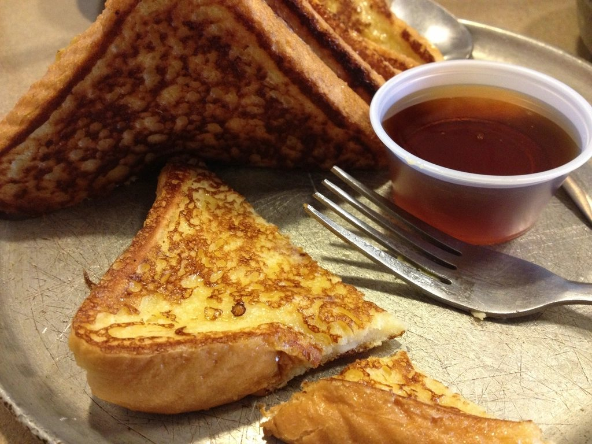
フレンチトースト
厚切りのパンを卵液に浸し、注文ごとに焼き上げます(約10分)。ハーフサイズあり。トッピングはバニラアイス、チョコバナナ、ベリー、あんバターなど。
滋賀県草津市西草津 / 2026年8月オープン
愛犬も、飼い主さんも。同じ店内で、ゆっくりごはんを。
焼きたてのフレンチトーストと、おにぎりの御膳。わんちゃんと一緒に過ごせる草津のカフェです。
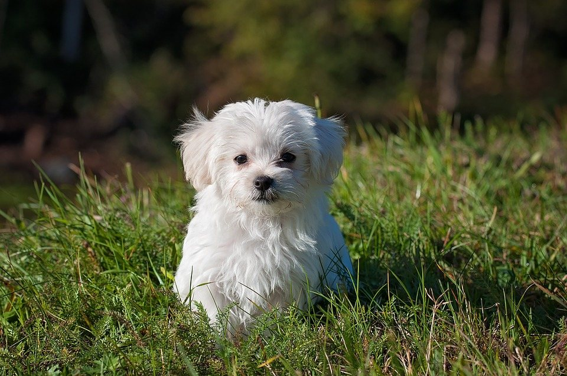
ABOUT
Samo samoは、2026年8月13日に草津市西草津でオープンしたカフェ&レストランです。天候に左右されず、愛犬と一緒に店内で過ごせるのが特徴で、犬連れでないお客さまももちろん入店できます。
席は柵で区切られ、テラス席もあるそうです。看板犬としてサモエドの「ディラン」くんと「ニコ丸」くんがいると紹介されています。貸切・オフ会の利用も案内されています。
店名の意味や由来は、確認できた範囲では公表されていません。
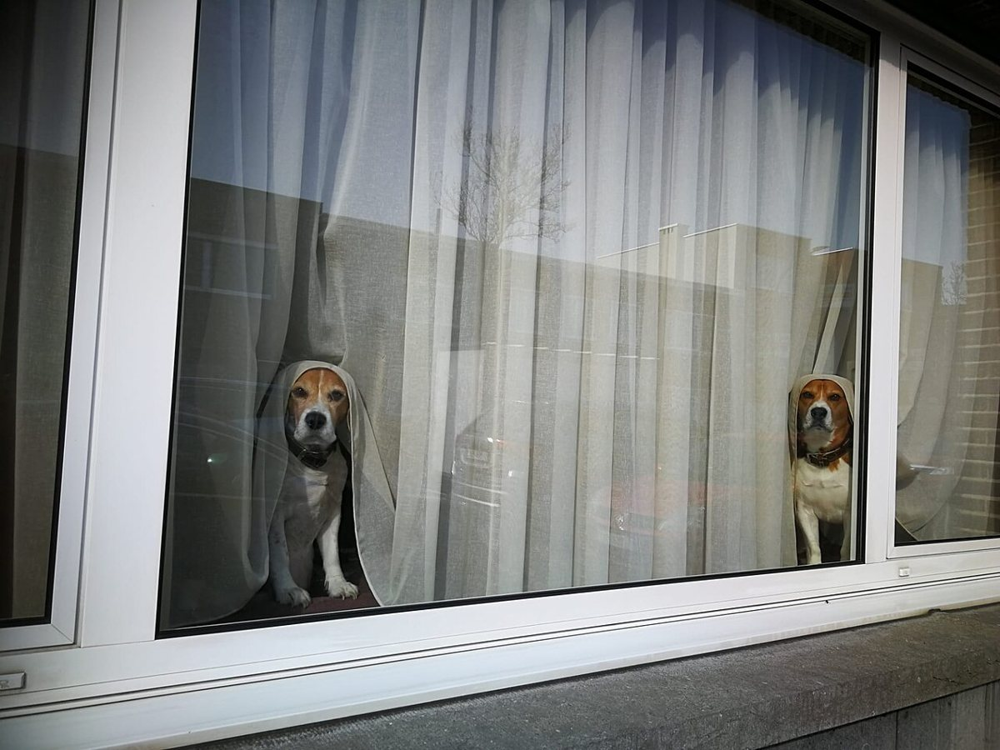
MENU
紹介記事で確認できた内容です。価格・最新のメニューは準備中(お店のInstagramをご確認ください)。

厚切りのパンを卵液に浸し、注文ごとに焼き上げます(約10分)。ハーフサイズあり。トッピングはバニラアイス、チョコバナナ、ベリー、あんバターなど。

小鉢の具を選べるおにぎり2つに、肉球とお店の名前の焼印入り卵焼きが付く定食。ランチは11:00〜15:00。
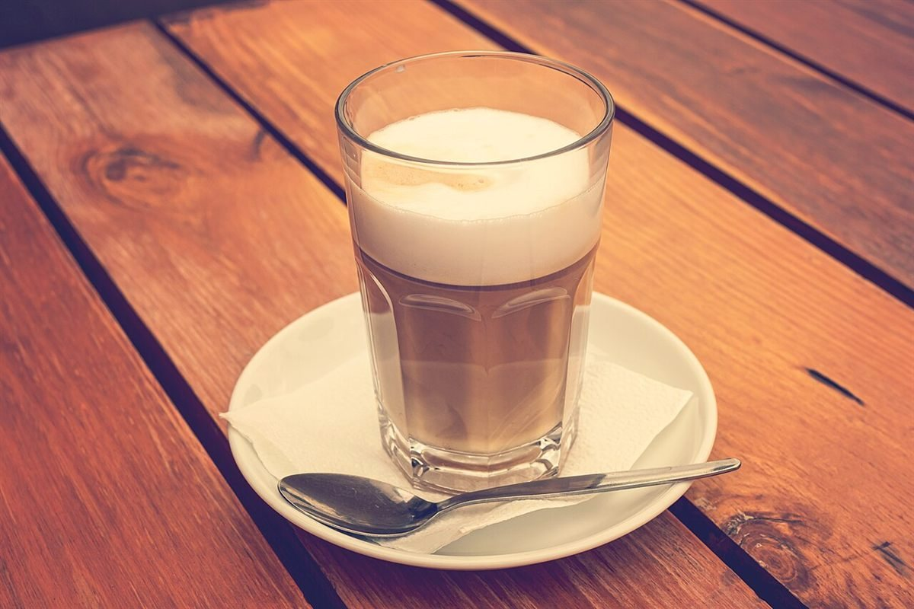
淹れたてのコーヒーやドリンク、デザートも。テイクアウトにも対応しています。
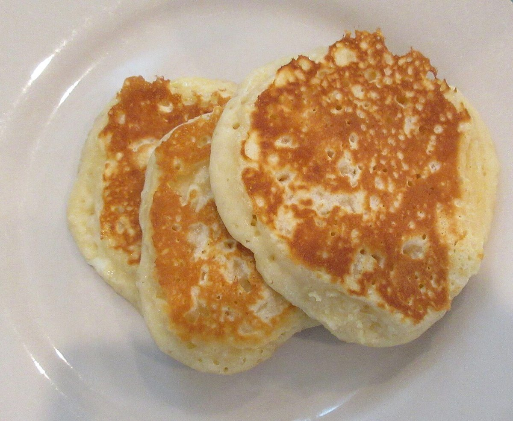
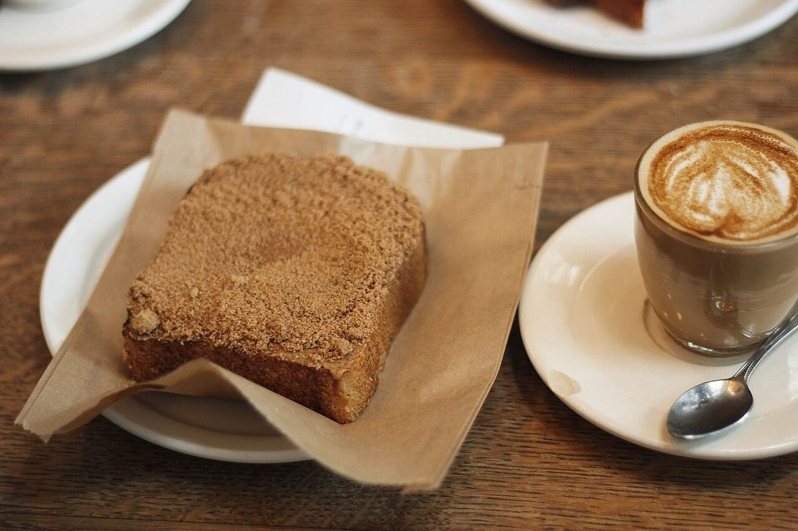
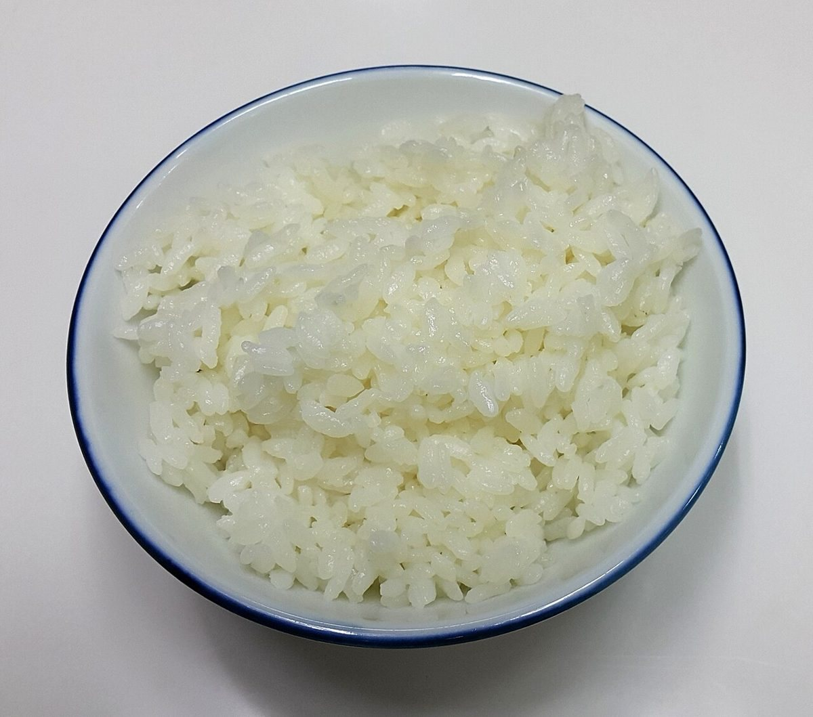

WITH DOGS
ご利用にはお店のルールがあると紹介されています(マナーパンツまたはマナーベルトの着用、狂犬病・混合ワクチンの接種証明など)。ドッグランとわんこ用メニューはありません。詳しくは来店前にお店へご確認ください。
お店の向かいに無料駐車場(約20台)があります。
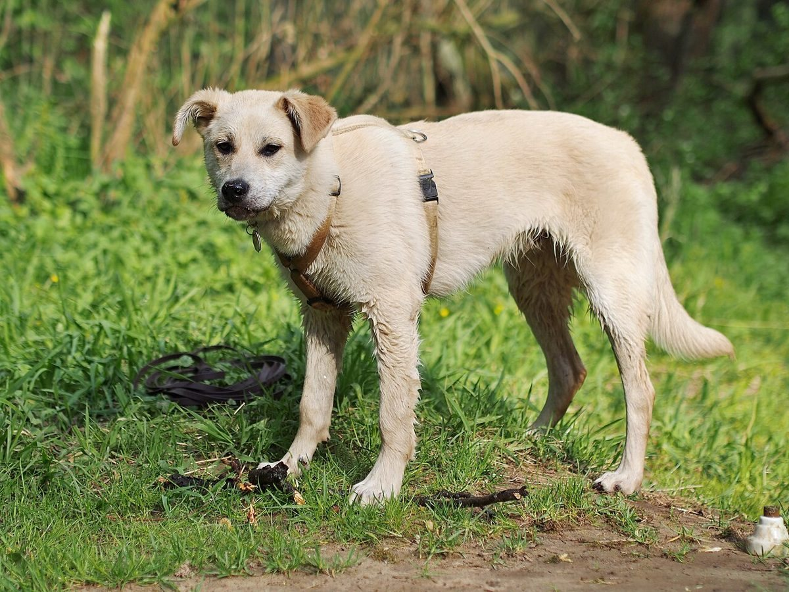
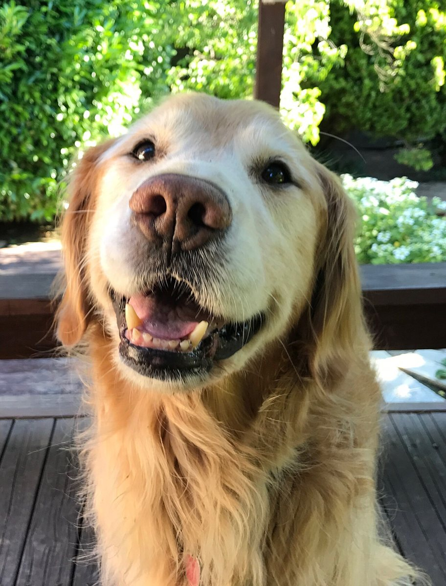
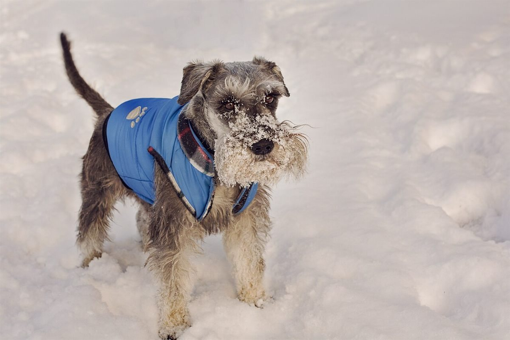
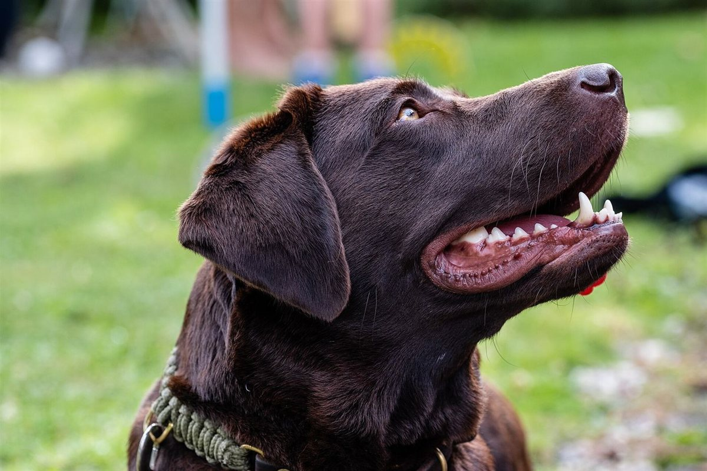

掲載の写真はすべてフリー素材のイメージで、店舗の実際の様子・メニューではありません。
VOICE
愛犬と同じ席でランチができて、うれしい休日になりました。
焼きたてのフレンチトーストを待つ時間も、楽しみのうちでした。
おにぎりと卵焼きの御膳が、やさしい味でほっとしました。
上記は制作側が作成したイメージ例であり、実際のお客さまの声ではありません。
ACCESS
PHOTO CREDITS
写真はWikimedia Commons等のフリー素材です(幅1200px以内に縮小、一部切り抜き)。店舗の実写ではありません。


.jpg){kind=link}
.jpg){kind=link}